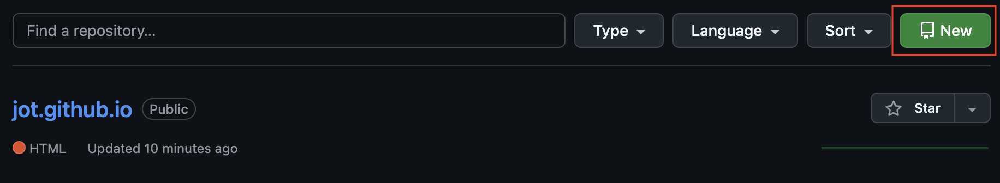
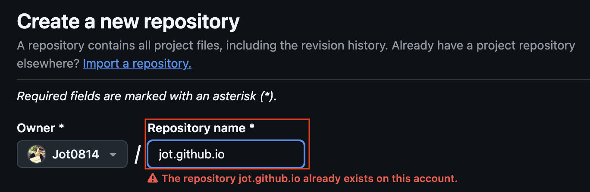
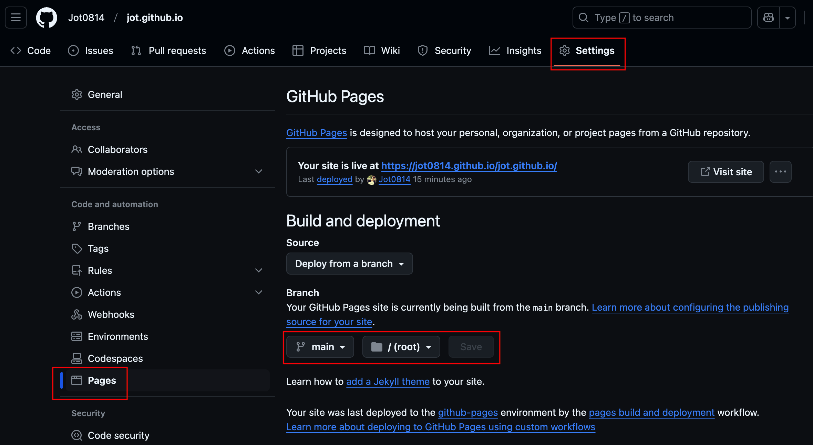
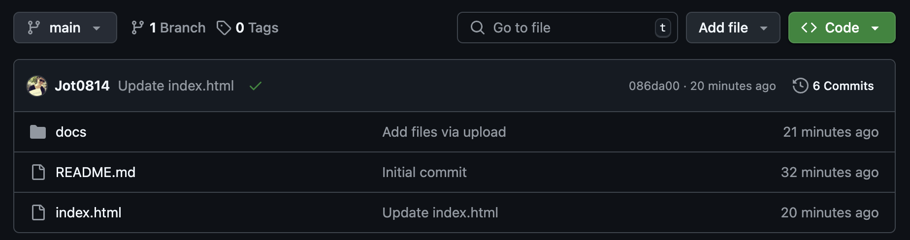
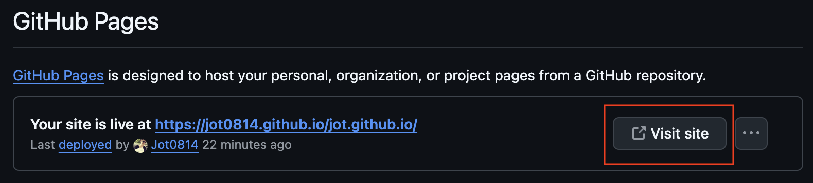
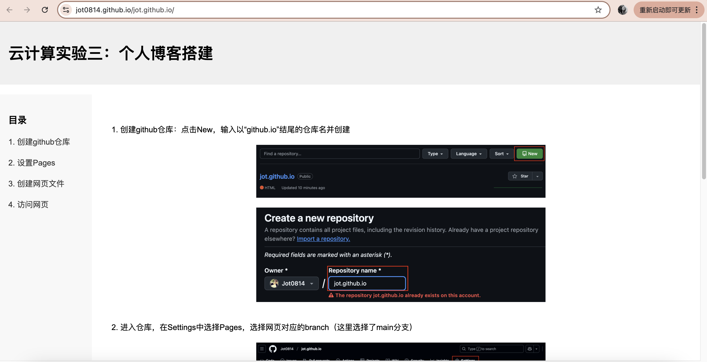

1. 创建github仓库：点击New，输入以“github.io”结尾的仓库名并创建
 2. 进入仓库，在Settings中选择Pages，选择网页对应的branch（这里选择了main分支）
3. 在仓库中创建对应的网页文件：index.html以及其他资源（图片等），根据个人喜好进行网页的设计
4. 访问网页https://jot0814.github.io/jot.github.io/，或者在仓库的Settings/Pages中点击Visit site
 